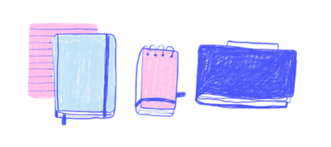
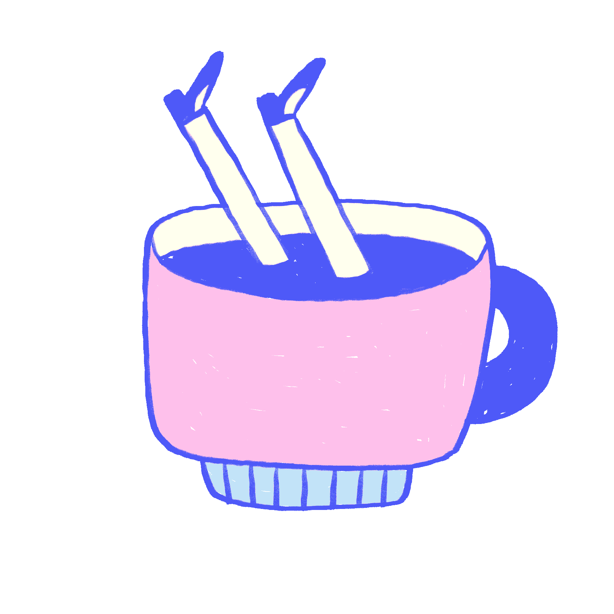

<div class="todo-container">
  <header>
    <h1>My To-Do List !</h1>
    <div>
      
    </div>
    <mat-divider></mat-divider>
  </header>

  <div *ngIf="todos$ | async as todos">
    <div>
      <h2 *ngIf="!todos.length">Add your first to-do</h2>
      <h4 *ngIf="!todos.length">What do you want to be done today ?</h4>
      <h4 *ngIf="todos.length">Let's do our best ! My today's tasks :</h4>
    </div>
    <div class="input-container">
      <mat-form-field>
        <mat-label>Enter the task description</mat-label>
        <input matInput type="text" [(ngModel)]="decription" />
        <button
          *ngIf="decription"
          matSuffix
          mat-icon-button
          aria-label="Clear"
          (click)="decription = ''"
        >
          <mat-icon>close</mat-icon>
        </button>
      </mat-form-field>

      <button
        [disabled]="!decription"
        mat-flat-button
        extended
        (click)="addTodo(todos.length + 1)"
      >
        <mat-icon>add</mat-icon>
        Add a task
      </button>
    </div>
    <div>
      <ul *ngIf="todos.length; else empty">
        <li *ngFor="let todo of todos$ | async; let i = index">
          <app-todo-item [todo]="todo"></app-todo-item>
        </li>
      </ul>
      <ng-template #empty>
        <div class="empty-task">
          <h4>
            Don't put too much pressure on yourself to complete the tasks, allow
            you some break...
          </h4>
          <div class="coffee_break">
            
          </div>
          <span>Illustrations by Frannerd</span>
        </div>
      </ng-template>
    </div>
  </div>
</div>